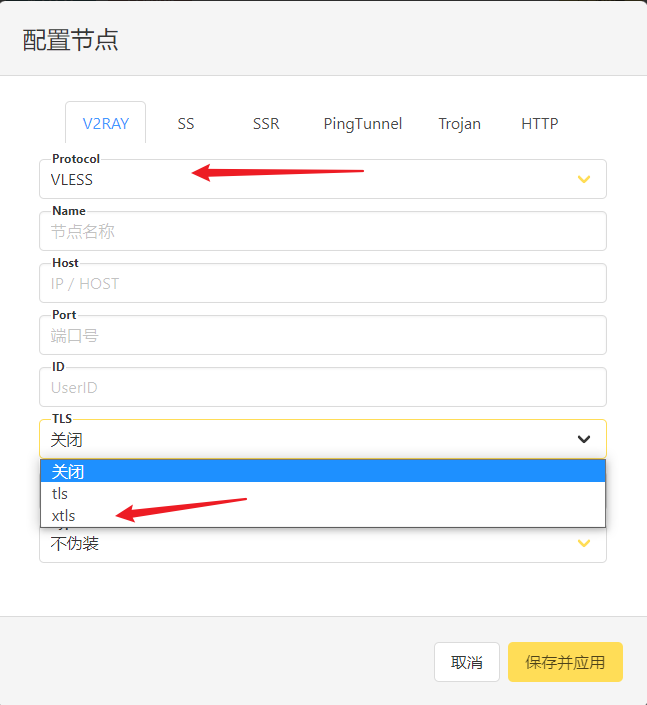

对 Linux 的科学上网的环境头疼很久，由于服务器是在天翼云上面的 Ubuntu 主机，跑个 git 一点速度都没有，真 TM 想爆粗口。想起以前看到过的神器 proxychains。于是决定试试。毕竟无论 apt， git ，还是 curl 等等，单独去指定代理太麻烦了，配置文件各有各的，脑袋记不住。这个服务器考虑到稳定性，没有安装 GUI 界面，所以刚开始并不打算在服务器上部署 V2ray。但是去网上转了一圈，发现免费的 HTTP 代理没有一个能用(浪费时间的东西)。于是顺便在服务器上安装了 V2rayA。
所以，有了 proxychains + V2rayA 这个组合，做个记录
proxychains
安装
我使用的是 Ubuntu，所以一行命令搞定。当然，你也可以自己编译（可以参考下面编译这一步骤）。官方的 Github
apt install proxychains4
请注意，install 后必须是 proxychains4，如果只是 proxychains，会安装旧的版本 – 3。
编译（可选）
安装编译环境
apt-get install build-essential克隆代码
git clone git@github.com:rofl0r/proxychains-ng.git
cd proxychains-ng编译
sudo make sudo make install sudo make install-config找到配置文件，复制到 etc 目录下面
cp ./src/proxychains.conf /etc/proxychians.conf修改配置
注释 strict_chain
添加 一行配置socks5 192.168.1.1 1080测试，能看到输出结果就是通了
proxychains4 -f /etc/proxychians.conf curl -v google.com
配置
配置文件的位置：/etc/proxychains4.conf
注销
proxy_dns
该参数会代理 DNS，如果要使用本地的 DNS，注销即可注销
strict_chain，开启dynamic_chain
strict_chain 是官方默认，但是这有个问题：如果你指定多个代理，他会按照代理的顺序，将数据包依次通过这些代理。dynamic_chain：该配置项能够通过ProxyList中的每个代理运行流量，如果其中一个代理关闭或者没有响应，它能够自动选择ProxyList中的下一个代理；strict_chain：该配置为ProxyChains的默认配置，不同于dynamic_chain，也能够通过ProxyList中的每个代理运行流量，但是如果ProxyList中的代理出现故障，不会自动切换到下一个。random_chain：该配置项会从ProxyList中随机选择代理IP来运行流量，如果ProxyList中有多个代理IP，在使用proxychains的时候会使用不同的代理访问目标主机，从而使主机端探测流量更加困难。
添加代理
在该文件的最后位置，指定代理，可以有多个，格式如下：
http 127.0.0.1 23334同时，注销默认的
socks4 127.0.0.1 9050
使用方法
只需在需要代理的命令前面加入 proxychains4 就行，或者直接 proxychains，这两个做了映射，是同一个东西
proxychains curl google.com
你还能像这样，查看你代理后的 IP 地址proxychains curl myip.ipip.netproxychains curl cip.cc
V2rayA
上面说了 proxychains 的使用方法，但是我们还需要有一个代理，才能畅快使用外网。我去网上找了一堆免费的 HTTP 代理，发现没一个能用的，curl 各种报错，白瞎了我一个晚上。想想还是安装一个 v2ray 到服务器算了。于是找了这个 V2rayA。部署和使用方法可以参考官方的文档
首先，你要确认你用的是哪个个核心：v2fly or xray。
在没有科学上网的环境下，要去使用一键脚本安装 V2rayA，会进入死循环。没办法，只能使用离线安装的方法来搞。
我这里以 Xray 为例：
官方的一键安装脚本为：
# bash -c "$(curl -L https://github.com/XTLS/Xray-install/raw/main/install-release.sh)" @ install直接在本地浏览器访问
https://github.com/XTLS/Xray-install/raw/main/install-release.sh然后把脚本的内容复制到远程服务器上，保存为文件，这里命名为 go.sh，赋予 744 的权限（用 chmod 命令）
Xray-core 下载的 URL：
https://github.com/XTLS/Xray-core/releases/根据自己的服务器的 CPU 架构选择对应的安装包， 我这里是：
Xray-linux-64.zip。这里，我们需要下载好安装包，然后上传到服务器安装，使用
--local指定安装包的位置
go.sh install --local Xray-linux-64.zip禁用 xray 服务。安装后可以关掉服务，因为 v2rayA 不依赖于该 systemd 服务。
systemctl disable xray --now
到这里，Xray 的 core 就安装好了，接下来安装 V2rayA 的本体
同理，去 Github 下载对应 CPU 架构和发行版的安装包，上传到服务器
https://github.com/v2rayA/v2rayA/releases
我用的是 Ubuntu，所以直接下载 Debian 的就行。包名如下：installer_debian_amd64_1.5.7.deb安装，自行替换 deb 包所在的实际路径
apt install /path/download/installer_debian_xxx_vxxx.deb指定 v2rayA 调用的 Xray_core。Xray 一键安装的脚本安装的文件路径如下：
installed: /etc/systemd/system/xray.service installed: /etc/systemd/system/xray@.service installed: /usr/local/bin/xray // 记下这个路径 installed: /usr/local/etc/xray/*.json installed: /usr/local/share/xray/geoip.dat installed: /usr/local/share/xray/geosite.dat installed: /var/log/xray/access.log installed: /var/log/xray/error.log新建文件夹
/etc/systemd/system/v2raya.service.d，然后新建一个xray.conf的文件，添加以下内容，后面的路径根据Xray 实际安装后的来[Service] Environment="V2RAYA_V2RAY_BIN=/usr/local/bin/xray"重启服务
systemctl daemon-reload && sudo systemctl restart v2raya
启动 v2rayA 并设置开机自启
systemctl start v2raya.service
systemctl enable v2raya.service访问服务器的公网 IP，端口号是 2017。会出现配置的页面，这个前后端分离的设计得给赞，特别适合没有安装桌面环境的系统。之后，你可以创建一个配置节点，如果在
TLS中出现xtls，证明 Xray 的核心安装正确并被识别

- 按照提示填写对应的参数即可。也有设置可以修改 http 和 socks5 的端口号。
到这里基本就没什么问题了，对比了去 github clone 东西，简直就是天和地的区别。起飞啰。。。。。。
Reference
https://coding.tools/cn/blog/using-proxy-in-linux-ubuntu-with-v2ray-privoxy-proxychains
https://freesilo.com/?p=1244